Season 47 (2012-2013)
-
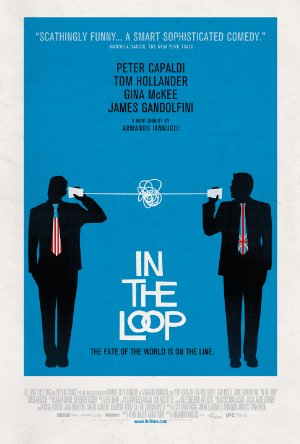
September 9, 2012Directed by Armando Iannucci; Starring Peter Capaldi, Harry Hadden-Paton, Samantha Harrington, Gina McKee
In the Loop
UK, 2009, 106 min, Color, Not Rated
In the Loop is a mordantly funny satire about the political maneuvering behind the run-up to elective war. Both the U.S. President and U.K. Prime Minister fancy the war. American diplomat Karen Clarke (Mimi Kennedy) and General Miller (James Gandolfini) do not; nor does British Secretary of State for International Development Simon Foster (Tom Hollander). But when Simon accidentally supports military action on TV, he suddenly has a lot of friends across the pond. If Simon can get into the right meeting, if his entourage of one can sleep with the right intern, if either can outwit the Prime Minister's volcanic spin-doctor, Malcolm Tucker (a sublime Peter Capaldi), they may be able to stop the war.
Film Notes (Katherine Reynolds): Here's hoping you like your comedy black! And here's hoping you don't mind dialog that's blue. Very, very blue. With those advisements, hie yourself to the opening of The Cinema, Inc.'s 47th season to see In the Loop, a 2009 British comedy spin-off of the successful BBC series The Thick of It. Full of the kind of English actors with whom we are all besmitten (yes, you are, you know you are) but can probably not name and many equally talented American actors whose faces, if not names, you will recognize – James Gandofini, Mimi Kennedy, David Rasche – this political satire received a 94% positive rating on Rotten Tomatoes and was nominated for an Academy Award for Best Adapted Screenplay in 2010.
An unimportant, except to himself, functionary of the British Home Office (Tom Hollander – the Reverend Collins in the latest Pride and Prejudice) pronounces in a BBC interview that war in the Middle East is "unforeseeable." After being soundly berated by the PM's hatchet man, played with zeal by Peter Capaldi (probably first seen in the US in Local Hero), he then steps further into the "poo," as the English would say, by declaring there may be a need in the Middle East to "climb the mountain of conflict."
Saddled with these contradictory, if oblique, statements, he then becomes a pawn between the British Home Office and a visiting American delegation of military and State Department reps. Every character has an agenda, if not two or three. As A. O. Scott says in his New York Times review, "Mr. [Armando] Iannucci maps the queasy interpersonal power games at the heart of any political endeavor. The inhabitants of his universe are in essence well-connected cubicle rats, or junior high school clique members with media access and large standing armies…"
Don't let the idea that they are supposedly all on the same side fool you into believing they have each other's backs. Well, perhaps they do… all the better to stick the knife in. Come, enjoy, and go home thinking "the real world doesn't work like this," you sweet naïve creatures. -
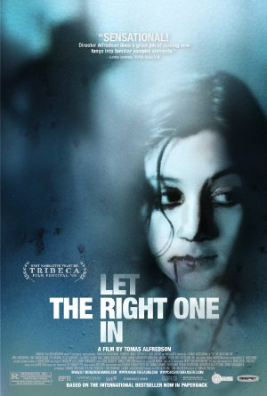
October 14, 2012Directed by Tomas Alfredson; Starring Kåre Hedebrant, Lina Leandersson, Per Ragnar, Henrik Dahl
Let the Right One In (Låt den rätte komma in)
Sweden, 2008, 115 min, Color, R, Swedish w/subtitles
Pre-adolescent angst has rarely been as eerie or unsettlingly honest as in this stylish, psychologically complex tale of friendship between a tormented schoolboy (Kåre Hedebrant) and his new neighbor (Lina Leandersson), a reclusive 12-year-old girl who isn't exactly what she seems. Adapted from the popular novel by author John Ajvide Lindqvist, Let the Right One In is the rare genre film that explores sophisticated issues and themes with an intensity that can be hard to achieve within the bounds of realism. The result is a thoughtfully plotted adult fable that builds quiet momentum toward a thrilling climax.
Film Notes (JA): In 2012, it seems as though we are bombarded with vampire-related subject matter. Feature films as well as television shows. Sparkly ones (Twilight) to angsty ones (Vampire Diaries) to nymphomaniacs (True Blood). Let The Right One In is a "vampire movie," but it does a wonderful job in transcending that. It is directed by Tomas Alfredson (Tinker, Tailor, Soldier, Spy) and is the original Swedish adaptation of the book with the same title. There was a subsequent American remake titled Let Me In.
A 12-year-old boy, Oskar, meets a strange new neighbor, Eli. It probably won't spoil anything to know that the neighbor turns out to be a vampire. Oskar has a difficult time at school dealing with bullies. Eli, being a vampire, is a bit of a social outcast as well. Not being able to go out in the sun may be a factor. The absence of family support is evident for both characters. Reminiscent of films like Harold and Maude, two offbeat individuals who are isolated by their peers come together and help each other cope with difficult circumstances.
There is a bit of blood and guts in this one, but the execution is very subtle. During one sequence, we see an entire action take place under a distant bridge. The audience is removed from the immediate violence, but it seems a bit more eerie to be watching from a distance. Rather than just show blood squirting everywhere, the level of violence is implied using sound. Much of the violence in the film occurs either out of frame or cleverly placed in the shadows.
Let The Right One In is filled with great performances and beautiful cinematography. The vampire genre, which has been bled dry (although the puns are endless), is not used as a crutch. The interesting aspects of this film have nothing to do with vampires. At first glance, it may seem to exist outside the realm of an individual's presumed tastes, but this is not a film that should be missed by any set of standards. -
November 11, 2012
Airplane!
USA, 1980, 88 min, Color, PGDirected by Jim Abrahams, David Zucker, Jerry Zucker; Starring Kareem Abdul-Jabbar, Lloyd Bridges, Peter Graves, Julie Hagerty
This spoof of the Airport disaster movies combined sight gags, deadpan dialogue and a cavalcade of clichés to form a broad comedic style that would dominate Hollywood for the next 20 years. Aerophobic former pilot Ted Striker (Robert Hays) boards a passenger jet to woo back his stewardess girlfriend (Julie Hagerty). When food poisoning overtakes the crew, Striker must land the plane, aided by a glue-sniffing air traffic controller (Lloyd Bridges) and Striker's former captain (Robert Stack). The trio of directors would go on to make Top Secret! and Ruthless People before launching successful solo careers.
Film Notes (Royster Chamblee): This spoof of the big-budget disaster films of the 1970s has been rated as one of our greatest comedy films. Loosely based on Paramont's 1957 film Zero Hour! (Ted Striker was Ted Stryker in the older film), Airplane! is known for its use of absurd and fast-paced slapstick comedy, with most of the actors playing against type.
The reputation of this wonderful comedy has only increased with time. It was voted tenth funniest American film on AFI's "100 Years… 100 Laughs" list in 2000. It ranked sixth on Bravo's "100 Funniest Movies." In a major 2007 survey by "Channel 4" in the United Kingdom, it was judged the second greatest comedy film of all time!
If you want to see some of the gags, the trailer is available on YouTube. But I suggest you wait to see it with us on the big screen (and wait for all the credits at the end). It's a hoot!- 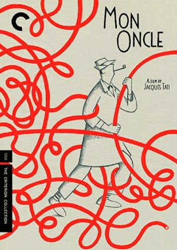
December 9, 2012Directed by Jacques Tati; Starring Jean-Pierre Zola, Adrienne Servantie, Lucien Frégis, Betty Schneider
Mon Oncle
France, 1958, 117 min, Color, Not Rated, French w/subtitles
Jacques Tati's beloved Monsieur Hulot is a bumbling innocent at sea in the vagaries of the modern world. Like Chaplin and Keaton before him, Tati uses his character's inherent mildness and some wonderfully choreographed slapstick comedy to underscore his commentary on humanity versus the changes of modern life. A film set along the dividing line between Paris' past and its future, Mon Oncle was awarded the Best Foreign-Language Film Oscar in 1958, as well as a Special Jury Prize at the Cannes Film Festival.
Film Notes (Karen Bender): In the 1950s, Paris was busily undergoing a renaissance of sorts. Post-war optimism was expressed in urban renewal programs resulting in tearing down blocks of aged dwellings, and replacing them with modern homes with all the modern conveniences. The labyrinth of antiquated streets was being replaced with neatly drawn developments of sensible houses on tidy plots. Of course, these pockets of modernism were surrounded by the Paris of old and a subtext of tension between the supporters of the new and modern versus the quirky, dilapidated sections of Paris.
Into this milieu strides a lanky, short-panted, gawky dreamer by the name of M. Hulot (Jacques Tati.) Hulot resides in the quirky environs of l'ancienne Paris. Hulot's sister is married to a prosperous man with a corporate job as an efficiency expert. The couple embrace the modernity of their sterile existence in a nightmarishly clean and modern house shared with their son, who happens to adore his misfit uncle. A culture clash is about to arise as the wrinkled raincoat-wearing Hulot brings his eccentricities from the past into this modern world embraced by his sister. Comedy will ensue.
Mon Oncle is a delightful and sprightly film that relies on visual jokes and sound effects more than it does dialogue. Harkening back to the days of the great silent comedies, you will find that there is very little need for reading the subtitles since the actions on the screen are self-explanatory for the most part. There is a notable moment of slapstick involving pedestrians, mischievous boys and a light pole. Very little dialogue at all – the action is purely cinematic and comedic.
Mon Oncle makes use of very minimal sound effects that are expositional and generally transmit information about the scene or a character rather than providing a sonic background for dialogue or action. For example, notice how in the sterile environment of the modern house, we are very aware of the echoing, sharp sounds of footsteps letting us know that the house is sparingly decorated and feels sterile. Contrast that to the more haphazard soundscape juxtaposed on the scenes of the streets of old Paris with its street vendors, dogs, and random activity in the chaos of that particular place in time.
Mon Oncle represents Tati's second of three portrayals of the character of M. Hulot. This film was preceded by Mr. Hulot's Holiday in 1953 with the final installment Playtime released in 1967. Tati was awarded the Oscar for Best Foreign Film in 1954, and upon receiving this honor was offered the traditional panoply of gifts and treats reserved for the winners. In place of these material goods, Tati simply requested to be given the opportunity to visit Stan Laurel, Buster Keaton, and Mack Sennett, a triumvirate of silent film giants who undoubtedly made an impact on Tati in his formative years. It is said that at this visit, Keaton remarked that Tati's work with sound had carried on the true tradition of silent cinema (see Bellos 1999, p 226, The Old World and the New). We'll let you be the judge of that as we present our screening of Mon Oncle.Read Roger Ebert's review of Mon Oncle at Great Movies.- 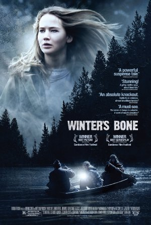
January 13, 2013Directed by Debra Granik; Starring Jennifer Lawrence, Isaiah Stone, Ashlee Thompson, Valerie Richards
Winter's Bone
USA, 2010, 100 min, Color, R
Her family home in danger of being repossessed after her meth-cooking dad skips bail and disappears, Ozark teen Ree Dolly (Jennifer Lawrence) breaks the local code of conduct by confronting her kin about their conspiracy of silence. If she fails to track down her father, Ree, her younger siblings, and their disabled mother will soon be homeless. A thriller as bleak as its hardscrabble landscape, Winter's Bone earned Academy Award nominations for Best Picture, Best Adapted Screenplay, Best Actress (Lawrence) and Best Supporting Actor (John Hawkes).
Film Notes (JA): Winter's Bone is a harrowing journey into rural Southern poverty. Kin and clan mean more than law and order. "We take care of our own" is not much of a social safety net.
The foothills of Missouri are where 17-year-old Ree Dolly learns this hard lesson. Her mother's catatonic and her dad, a meth "chef," is in and out of jail. Only now he's missing. And since he put their mini-farm up as collateral, Ree has to find him to keep the bail bondsman from taking their house and putting her, her mom, and her younger brother and sister out in the cold.
Jennifer Lawrence, who had previously been a regular on The Bill Engvall Show, stars as Ree. A teenager during production, Lawrence delivers a performance of ferocious, fully mature self-possession that recalls a young Jodie Foster. Ree is torn between loyalty to her brother and sister and a desire to escape her ancestral home by joining the Army and making a new life for herself. In scene after scene, she holds her own against a cast of older stand-outs: John Hawkes as an unstable meth-addicted uncle; Kevin Breznahan as a sleazy drug lord; William White as the monstrous head of the family; Dale Dickey as a plain-talking woman who, one might say, redefines kindness.
Aside from the gripping story, Winter's Bone is an interesting window into culture. The world depicted in this film is vastly different from the one most of us inhabit in modern society. Take away someone's smart phone and watch how quickly their world comes unraveled. Try hunting squirrel for dinner. It is a bleak world for these mountain folk. The future looks dismal.
Anxious sympathy for this young woman in peril is the prevailing emotion you are likely to feel when watching Winter's Bone. At 17, barely more than a child herself and forced to respond to challenges that would terrify most adults. You root for her to succeed in fighting for her family but in the end, what does she gain? What is there in her future to strive for?- 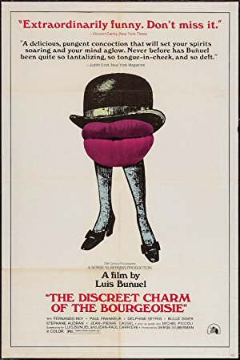
February 10, 2013Directed by Luis Buñuel; Starring Fernando Rey, Paul Frankeur, Delphine Seyrig, Bulle Ogier
The Discreet Charm of the Bourgeoisie (Le charme discret de la bourgeoisie)
France, 1972, 102 min, Color, PG, French w/subtitles
Winner of the Oscar for Best Foreign Film, Luis Buñuel's surrealist comedy skewers social conventions through the conceit of a dinner party that cannot be consummated. Interweaving flashbacks and dreams-within-dreams, Buñuel interrogates the absurdities of bourgeois ceremony and hypocrisy as two well-heeled couples and their friends are vexed by such obstructions as botched scheduling, sexual desire, a theater audience, an untimely funeral, and armed revolutionaries. Their inability to eat increasingly suggests a manifestation of their innermost fears, but the film resists such straightforward interpretations.
Film Notes (Gerry Folden): From Aristotle to Edgar Allen Poe, that twilight on the edge of sleep has held magical moments in the wakened ponderings of the introspective mind. Dreams within dreams, seemingly real but with a large helping of the improbable, etc. constitute what is commonly referred to as the hypnologic state and introduce the everyman to that artistic realm called 'the surrealistic.'
Luis Buñuel (born in 1900 in Spain, died in 1983 in Mexico), co-author and director of Le charme discret de la bourgeoisie, is said to be the father of Surrealistic cinema. His strict Jesuit education notwithstanding, he fell under the influence of and became friends with Salvador Dali and Federico Garcia Lorca both artistically and religiously rebellious. The Discreet Charm, winner of the Oscar for Best Foreign Film (1973), stands as the best example of Buñuel's fully realized vision of the surreal. (His groundbreaking first entry into the surrealist, 1929's Un Chien Andalou, was a short.)
Like Modest Mussorgsky's Pictures at an Exposition, this film uses the idea of six people attempting to have a dinner party as the intermezzo that connects a series of surreal dreamlike interruptions to an otherwise bourgeoisie get-together.
Lovers of legacy will have no difficulty connecting the dots from Buñuel to BlueVelvet (1986) and Twin Peaks (TV, 1991) auteur David Lynch. If the foremost male character Don Rafael Acosta looks at all familiar to you, it's because Fernando Rey was the title character Alain Charnier in The French Connection (1971) and French Connection II (1975).
This film will take you on a journey fanciful and funny and leave you with sights and thoughts new and wondrous which, unlike those of the hypnologic kind, you will find hard to forget.Read Roger Ebert's review of The Discreet Charm of the Bourgeoisie at Great Movies.- 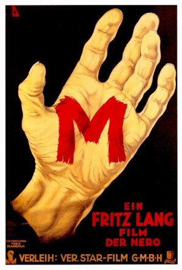
March 10, 2013Directed by Fritz Lang; Starring Peter Lorre, Ellen Widmann, Inge Landgut, Otto Wernicke
M
Germany, 1931, 99 min, B&W, Not Rated, German w/subtitles
Inspired by the Dusseldorf child murders, Fritz Lang's classic early talkie was a profound influence on Alfred Hitchcock and Orson Welles (among others) and a touchstone for 1940s American film noir. In 1931 Berlin, police are rounding up the city's criminals in their search for a child murderer. With the heat threatening their livelihood, underworld leaders decide to take matters into their own hands. Though filmed in Weimar Germany, the technically dazzling M solidified Lang's reputation with American audiences and made an international star out of Peter Lorre.
Film Notes (Toni Meyer): During the late 1940s it would have particularly benefited both Fritz Lang and Peter Lorre to work together in the burgeoning genre of film noir, at which they both excelled, and which they had together helped to create with M. The film introduced the modern police procedural to cinema and with its atmospheric realism served as a template for all urban crime thrillers that would follow.
M is set in the everyday life of Weimar-era Berlin, depicting ordinary citizens, criminals, and police and forensics experts at work in their Alexanderplatz headquarters. Lang said that one of the reasons he chose Lorre for the role of Hans Beckert, the serial killer stalking Berlin, was because he fit this world, that he looked like a real everyday person. But obviously no one would choose Lorre to play a man who was not a little out of the ordinary. At age 26, Lorre still had a soft, childish look about him and this gave an uncanny aspect to casting him as a murderer who targets children. It would be natural for little girls to be on their guard if they ran into a big scary man in the street, but if a funny, cute little boy-man came along, they might make friends with him, and if he was very nice and bought them a balloon or a bag of candy, they might agree to a playful suggestion to go into the bushes with him. Lorre plays Hans as an infantile creature whose primal urges are easily read when he makes monster faces at himself in his bedroom mirror or stares at a shop window full of knives after spotting a tempting little girl. His lack of self-control is frightening, and makes the race between law enforcement and the city's criminals to hunt him down all the more urgent. When his criminal avengers finally trap him and confront him with his crimes, he panics like a little boy caught with his hand in the cookie jar. We can't help feeling instinctively protective of him, and we believe him when he pleads that he's helpless to stop himself from killing.
M is by far the best film made by the husband-and-wife team of director Fritz Lang and screenwriter Thea von Harbou, and casting Lorre in it made it legendary. Lang knew this and for years he courted Lorre to work for him again, but Lorre refused because Lang had treated him so abominably during the making of M. While shooting the film's famous trial sequence, Lang had the actors who carried Lorre into the scene throw him around until he was bruised, exhausted, and nearly hysterical, because Lang wanted him that way when he delivered his big speech. Lang's tendency to approach actors like an abusive animal trainer must have been one of the reasons why he never succeeded in establishing himself as an A-list Hollywood director (the Screen Actors Guild for one would have cracked down on him.)
The ingenious dramatic trajectory of M, which at first encourages viewers to fear and hate Hans, then forces them to confront his vulnerable humanity and question their own capacity for compassion, depends entirely on Lorre's presence in the role, and not just because he played his part with great sensitivity and insight, in spite of Lang's beatings. As we watch him in an extreme state of genuine exhaustion and despair, we take his emotional temperature and realize that he couldn't possibly have killed those children. Even though we virtually saw him do it (only virtually, since neither Lang nor any other commercial filmmaker then or now could get away with literally showing a man butchering little girls onscreen), our instincts tell us that he is innocent. The last thing we see of Lorre/Hans as he crouches on the floor is a reassuring hand protectively lowering onto his shoulder, and we are relieved. The final line of the film, in which the mother of one of Hans' victims says that we must all take better care of our children, suggests to us that Hans himself is one of these children.Read Roger Ebert's review of M at Great Movies.- 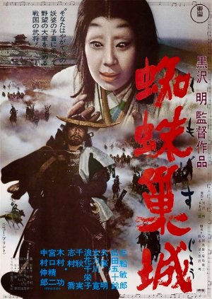
April 14, 2013Directed by Akira Kurosawa; Starring Toshirô Mifune, Isuzu Yamada, Takashi Shimura, Akira Kubo
Throne of Blood (Kumonosu-jô)
Japan, 1957, 110 min, B&W, Not Rated, Japanese w/subtitles
Kurosawa does Macbeth in medieval Japan. After a military victory, Lords Washizu (Toshirô Mifune) and Miki (Akira Kubo) wander lost in the Cobweb Forest, where they meet a mysterious old woman who predicts great things for Washizu and greater things for Miki's descendants. Washizu and Miki are soon promoted by the Emperor. Goaded by his wife, the ambitious Lady Washizu (Isuzu Yamada), Lord Washizu plots to make more of the prophecy come true, even if it means killing the Emperor.
Film Notes (Karen Bender): Fate, ambition, and destruction. These are the themes that motivated Macbeth and his malicious wife in the eponymous Shakespearean play Macbeth. These are also the dark forces defining the action in Throne of Blood. In the painterly hands of Akiro Kurosawa, this age-old story assumes epic cinematic proportions, as the tale of treachery unfolds in the days of feudal Japan.
Following a great military victory, two warlords are lost in a mystic forest where they meet an old woman who predicts great things for them both. When they emerge from the forest, one of them is possessed by an ambition to make the prophecy come true, even if it requires killing the Emperor to do so. Encouraged and assisted by his unrelenting evil wife, the dastardly deed is soon done and a tail of moral turpitude ensues, as the characters are tragically consumed by the results of their own actions.
The film employs the use of sound and silence to impart the sudden eruption of violence in the story, and since this is a Kurosawa film, there are treats for the eye everywhere. The mask-like white face of Asaji (Lady Macbeth) seems to make her into a ghost long before she is driven into madness, the sudden invasion of the throne room by a flock of birds, and the slow funeral procession advancing on the castle gates look like prophecies of inevitable doom, and are presented in such a visually arresting style that we can't turn away our gaze, even though we know that these characters are doomed.
To Westerners, Akiro Kurosawa enjoyed a status as the most Western and therefore most comprehensible of Japanese directors. These words, offered as praise by some critics, were also levied as a charge by others. For a time, Kurosawa was not seen by the Japanese as being sufficiently Japanese, and his attempts to make films were stymied. His training in a Western art school and his lifelong admiration for the films of John Ford didn't help this image, either. In fact, Kurosawa's career was so damaged by this assertion that he attempted – but failed – to commit suicide in 1971.
Had he been successful, we would have been deprived of his landmark masterpiece films Kagemusha and Ran. Imagine the loss.- 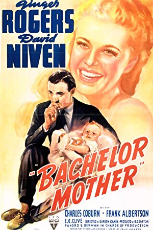
May 12, 2013Directed by Garson Kanin; Starring Ginger Rogers, David Niven, Charles Coburn, Frank Albertson
Bachelor Mother
USA, 1939, 82 min, B&W, Not Rated
In one of her great comic roles, Ginger Rogers plays Polly Parish, a salesgirl in a large department store. Single and without a steady beau, the unassuming Polly discovers a foundling and assumes care of the child. Polly's co-workers raise their eyebrows at her new ward, believing the baby is actually hers. The store's owner, J.B. Merlin (Charles Coburn), is likewise taken aback and dispatches his son, David (David Niven), to lead Polly back to the straight-and-narrow.
Film Notes (Karen Bender): Imagine for a moment that you are a single shopgirl, living in New York in 1939. Not the 1939 of soup kitchens and "Buddy, can you spare a dime?", but a frothy, madcap New York where people had money to shop for tchotchkes at venerable department stores and a girl could still marry a millionaire. This is the setting of Bachelor Mother.
In Bachelor Mother, Polly Parrish (Ginger Rogers) is a young, single woman, working at a New York department store for the Christmas season. Her job seems to consist of standing at a counter and winding mechanical Donald Duck toys all day long. Her hopes for continued employment are dashed as she receives her "pink slip" with her paycheck just a few days before Christmas.
Determined to remain on her own in New York, Polly decides to visit a nearby employment agency on her lunch break. On her way, she encounters an older woman leaving a baby on the steps of an adoption agency. Fearing that the baby will be injured, Polly confronts the situation by taking the baby inside. In chatting with the employees, Polly eventually realizes that the case workers believe her to be the unwed mother of the abandoned baby. Despite Polly's ardent protestations, they contact her employer, a carefree bachelor (David Niven) and the son of the owner (Charles Coburn) of the department store where Polly works. When the store is guilted into retaining Polly to allow her to keep her baby, the resulting tug of war between truth and fiction creates a sterling comedy of errors that still holds up today, showcasing Ginger Rogers' warmth and pluckiness and naturally providing her with an excuse to dance.
In 1939, the subject of single motherhood would have been a tricky one, to say the least. The Depression fractured many homes as men left their families to travel and find work, or even abandoned wife and children out of a sense of desperation and shame. Unwed mothers were unmentionable or spoken of only in whispers. To say that this proposed film contained very dicey subject matter is a vast understatement. However, the script written by Norman Krasna and Garson Kanin manages to humanize the comedy and the performances by the adorable Ginger Rogers and a highly flummoxed David Niven are timeless and stellar.
The tone of the film is a familiar one in 1930s cinema – utter escapism. One could consider this a "Depression Denial" film – a movie where the story line hearkens back to happier, more prosperous times and completely denies the fact that no one was entirely untouched by the Depression, and the reality of the situation was that countless people were living on the brink.
However, beneath the fun and the froth of Bachelor Mother is a darker subtext. While this film depicts New York as unscathed by economic failure, the idea of a woman abandoning a baby would have been a stark reality in those desperate days. We don't know why the baby was abandoned; the script never tells us, but the act of abandonment is shown to have been done with deepest regret. There is a great deal of pathos in this scene and audiences then, as now, would have understood the emotional depths only hinted at here.
Bachelor Mother is a remake of the German film Kleine Mutti (Little Mother, 1935) and itself was remade in a musical version called Bundle of Joy in 1956. It was Ginger Rogers' first cinematic venture outside of her association with Fred Astaire after they completed The Story of Vernon and Irene Castle. Rogers is the heart of this film – an everywoman, so to speak, and we root for her plucky all-American attitude from the first frame to the last. Bachelor Mother was David Niven's first lead role in a romantic comedy and it seems to have informed his performance in The Bishop's Wife (1947).
Bachelor Mother is a fun romp with sparking dialog, career-defining performances, and a wealth of one-liners. Is it any small wonder that it came out of 1939, Hollywood's Golden Year?- 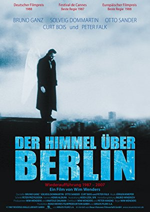
June 9, 2013Directed by Wim Wenders; Starring Bruno Ganz, Solveig Dommartin, Otto Sander, Peter Falk
Wings of Desire (Der Himmel über Berlin)
West Germany/France, 1987, 128 min, Color/B&W, PG-13, German w/subtitles
In Wim Wenders' lyrical romantic fantasy, Damiel (Bruno Ganz) and Cassiel (Otto Sander) are angels passing unseen through West Berlin, listening to people's thoughts and studying their lives. Though able to make their presence felt in small ways, angels are ultimately observers, unable to interact with people or to experience the joys and suffering of being alive. But when Damiel falls in love with circus acrobat Marion (Solveig Dommartin), he wishes to leave his celestial existence and become human. Wings of Desire features memorable cameos by Peter Falk (as himself) and Nick Cave & the Bad Seeds.
Film Notes (Britt Crews): At first it's not possible to describe anything beyond a wish or a desire. That's how it begins, making a film, writing a book, painting a picture, composing a tune, generally creating something. You have a wish… The thing I wished for and saw flashing was a film in and about Berlin.
A film that might convey something of the history of the city since 1945. A film that might succeed in capturing what I miss in so many films that are set here, something that seems to be so palpably there when you arrive in Berlin: a feeling in the air and under your feet and in people's faces that makes life in this city so different from life in other cities.
To explain and clarify my wish, I should add: it's the desire of someone who's been away from Germany for a long time, and who could only ever experience "Germanness" in this one city. I should say I'm no Berliner. Who is nowadays? But for over twenty years now, visits to this city have given me my only genuine experiences of Germany, because the (hi)story that elsewhere in the country is suppressed or denied is physically and emotionally present here.
Of course I didn't want just to make a film about the place, Berlin. What I wanted to make was a film about people – people here in Berlin – that considered the one perennial question: how to live?
And so I have "Berlin" representing "the world." ~Wim Wenders, First Treatment for Wings of Desire, 1986
Angels are among us: Watching, observing, listening to our thoughts, offering comfort when needed. Only children can see them. Without substance, they move through space free of encumbrances both physical and mental. They can be anywhere, but never everywhere at once. Angels cannot change events. They are here solely to bear witness, to write down the individual stories they uncover. Either male or female, they are of indeterminate age and favor overcoats.
Two such celestial observers, Damiel and Cassiel, soar over, around, and through both sides of a still-divided Berlin, less than three years before the Wall falls. Damiel finds himself increasingly drawn towards a lonely and lovely trapeze artist named Marion in a down-at-its-heels circus. For Damiel, immortality, this floating outside of time in a world without color, becomes increasingly unbearable. He craves the weight of a corporeal body. He longs to live in the now, to possess an individual history that is uniquely his own, to experience love, to live moment to moment, breath to breath. Fully understanding the cost, he resolves to fall into human, mortal flesh.
The legendary alchemist cinematographer Henri Alekan, who shot such masterpieces as Marcel Carné's Le Quai des Brumes (1938), René Clément's La Bataille du rail (1946) and Jean Cocteau's Belle et la Bête (1946), employed an old filter from the 1930s devised from one of his grandmother's stockings to achieve the luminescent gray textures in the black and white sequences of Wings of Desire. Utilizing silent movie superimpositions (the placement of one image over another), often with the use of mirrors, Alekan created as many of the special effects as possible in the camera. Sometimes the effect was achieved as simply as turning on and off the lights. Alekan explained: "I always prefer tricks that are invented on the set, manual, of the do-it-yourself variety, rather than tricks that are too calculated, too scientific. This all comes down to a difference of sensibility and emotion. I don't think the special effects we see so perfectly executed in American films touch us as deeply as the simpler effects of the kind we saw in the films of Méliès and which we find enchanting." Director Wim Wenders paid homage to the theatrical magic Alekan achieved throughout his career by naming the circus where Marion performs her trapeze act, Cirque Alekan.
On a more earthbound level, among other numerous nominations and awards, Wings of Desire won Best Director for Wim Wenders at the Cannes Film Festival and the European Film Awards. The Los Angeles Critics, the New York Film Critics Circle, and the National Society of Film Critics, USA, bestowed their Best Cinematography Awards on Henri Alekan.
Wenders singled out three directorial forebears in the closing titles: "Dedicated to all the former angels, but especially to Yasujirō, François and Andrej." Cinephiles will recognize the reference to Yasujirō Ozu, François Truffaut, and Andrei Tarkovsky.
Speaking of angels, let us grant the late, great Roger Ebert the final word(s): "The film evokes a mood of reverie, elegy and meditation. It doesn't rush headlong into plot, but has the patience of its angels… For me the film is like music or a landscape: It clears a space in my mind, and in that space I can consider questions. Some of them are asked in the film: "Why am I me and why not you? Why am I here and why not there? When did time begin and where does space end?"Read Roger Ebert's review of Wings of Desire at Great Movies.- 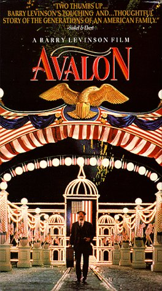
July 14, 2013Directed by Barry Levinson; Starring Aidan Quinn, Elizabeth Perkins, Leo Fuchs, Armin Mueller-Stahl, Lou Jacobi, Joan Plowright
Avalon
USA, 1990, 128 min, Color, PG
A moving family saga, Avalon is a fitting capstone to Barry Levinson's Baltimore Trilogy. In 1914 Sam Krichinsky (Armin Mueller-Stahl) emigrates to Baltimore to join his three brothers. Sam's son, Jules (Aidan Quinn), spurns his father's life as a laborer and becomes a salesman, eventually opening Baltimore's first TV store. Mueller-Stahl is a superb embodiment of the immigrant generation, capturing the melancholy of the diaspora of the family from city to suburbs after WWII.
Film Notes (Pete Corson): Avalon is the third of director Barry Levinson's autobiographical Baltimore trilogy, the first two being Diner and Tin Men, and followed by the non-biographical but Baltimore-based Liberty Heights. It received Academy Award nominations for Best Screenplay Written Directly for the Screen; Best Music, Original Score; Best Cinematography; and Best Costume Design. Levinson's script won the Writer's Guild of America Award for Best Original Screenplay.
It is the early 1950s and much has happened to the family of Polish-Jewish immigrant Sam Krichinsky (Armin Mueller-Stahl) since he first arrived in America in 1914 and eventually settled in Baltimore, Maryland.
Television is new. Neighborhoods are changing, with more and more families moving to the suburbs. Wallpaper has been Sam's profession, but his son Jules (Aidan Quinn) wants to try his hand at opening a large discount-appliance store with his cousin Izzy (Kevin Pollack). Sam's wife Eva (Joan Plowright) is the matriarch of the family and rules it with a velvet stick. Sam's children have changed their names to be more American. There are the inevitable clashes between the generations as the family is assimilated into America, generation by generation.
So, you say, what's new? Why did The Cinema, Inc. select this film for our series? It presents a remarkably accurate picture of Baltimore in the mid-1950s, and Barry Levinson has created the temper of those times perfectly, not just in the family storyline but also in the recreation of the feel of those times. Barry Levinson and I grew up in Baltimore at the same time and have many of the same memories.
The film is a recreation of post-World War II times in Baltimore in a way that only the director could do out of his own experience. Just as in Diner, the scenes speak a truth that comes out of Levinson's experience. An interesting fact about the family name Krichinsky in the film is that it was his mother's maiden name. We see city landmarks such as Baltimore's Washington Monument, the streetcars that were used in that period, and the Art Deco Senator Theatre where he saw films as a youth. (More about that in a personal postscript following these notes.)
The characters are drawn and acted beautifully. We feel as if they are our neighbors and we participate in their successes and failures. The delightfulness of the film lies in its faithful recreation of all of the details of the ambience of that period and the story line. This is a warm and rewarding film that will stay with you a long time.
Personal Postscript
Baltimore has a love affair with the Senator Theatre. Barry Levinson incorporated a scene in Avalon where the theater just happens to be part of the local scenery, but John Waters, another Baltimore film director, has given his own homage to the Senator Theatre in his films, especially Cecil B. DeMented. Levinson, Waters, and I were all born between 1939 and 1946 and discovered the thrill of films in our early childhood at that theater. Levinson and Waters are at opposite ends of the directorial spectrum. Where Levinson has made films that bring to life the people of an era, Waters' films are satirical cult films such as Hairspray, Polyester, Cecil B. DeMented, and A Dirty Shame, with themes that irreverently poke fun at the weird behavior of people and have characters that rival Fellini's.
In Levinson's scene with the Senator Theatre, a trolley car jumps its tracks and runs across the street in front of the Senator Theatre, causing an accident in the gas station on the other side. The street where we see the trolley next to the theater is the street where I grew up. It is a narrow neighborhood street with parking on one side only, impossible to ever hold trolley car tracks. The street in front of the Senator Theatre is the major north-south street in Baltimore, named York Road, and two hundred years ago it was the connection between York, Pennsylvania, and Baltimore.
How did Levinson accomplish his feat of magic, moving the trolley line to the little side street? The trolley car was built by Levinson of wood, modeled on the one remaining operable trolley car from that era but with rubber tires (watch for them). No overhead wires either. The trolley tracks are painted onto the street surface. The overhead wires actually are on York Road, not the side street with the trolley. When you see the trolley car, watch for the little boy on his tricycle at left. He figures into my story.
Last summer I made a pilgrimage to my row house to see its current state and to take photos of the Senator Theatre. The house owner was working in the yard and I told him I had lived in the house in the 1940s and 1950s. He then told me to watch for the little boy on the tricycle, who is his grown son today and happened to be watching the film crew from his trike. Oh, by the way, there has never been a gas station across from the theater. The whole incident has a peripheral tie to the story line but gives Levinson an opportunity to show us the theater of his childhood.
Baltimore's love affair with the Senator Theatre? The theater, built in 1939, is in a commercial district today and is incompatible with its neighbors. Developers have wanted to tear it down and put in modern shopping space. But various groups have fought to keep the theater in its original form. The theater has passed through a succession of owners and is now owned by the City of Baltimore. It was being renovated once again last year, but Baltimore has made it one of the city's iconic historical sites, and everyone in Baltimore knows of the theater and is proud of its existence. The Baltimore Sun has chronicled the efforts over the last ten years to save the theater and its period Art Deco decor. The theater is nationally famous for its interior and is ranked among the top theaters in the country for viewing films. My photo doesn't do it justice. At night the glass block vertical windows are lit with colored lights that make it majestic and miraculous.
Enjoy our personal connection with this brief moment in a wonderful film.- 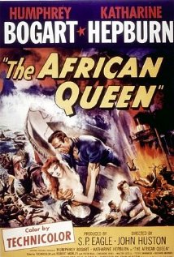
August 11, 2013Directed by John Huston; Starring Humphrey Bogart, Katharine Hepburn, Robert Morley
The African Queen
USA/UK, 1951, 105 min, Color, PG
Gin-soaked and unshaven, Humphrey Bogart plays a river rat who trades cargo on the Congo River during WWI. When Katherine Hepburn's prim middle-class missionary comes into play, the two of them are thrown into a race for their lives, floating down the Congo to escape the German officers who had held them as prisoners of war. One of Hollywood's crown jewels, The African Queen received Academy Award nominations for Best Actor, Actress, Director, and Screenplay, with Bogart winning the Oscar.
Film Notes (Britt Crews): "Two old people going up and down an African river. Who's going to be interested in that?" ~British producer Alexander Korda
Over her 66-year career, Katharine Hepburn appeared in 44 feature films, 8 television movies and 33 plays. Nominated for twelve Academy Awards, Hepburn won four. She played Mary Tyrone, Tracy Lord, Coco Chanel, Jo March, Eleanor of Aquitaine, Sylvia Scarlett, Amanda Wingfield, and a parade of other memorable, indeed indelible characters. Her leading men and directors rivaled her in star wattage and Technicolor personality. Yet only one film during this extraordinary career and life inspired Hepburn to write a book focused entirely on its genesis: The African Queen.
Hepburn's slim volume entitled The Making of The African Queen : Or How I Went to Africa With Bogart, Bacall and Huston and Almost Lost My Mind was not the only work to come out of the now-legendary cinematic safari to Africa. Peter Viertel, who co-wrote (uncredited) a good chunk of the screenplay with John Huston after the director's original writing collaborator James Agee suffered a heart attack, later penned a scathing fictionalized version of the shoot entitled White Hunter, Black Heart featuring a director more interested in bagging an elephant than finishing his film. The novel also became a movie.
Biographies and autobiographies of the principle players both in front of and behind the camera dedicate at least a chapter to The African Queen. Critics, bloggers, scholars, and fans repeat particularly juicy anecdotes. Instead of the relative comforts of a studio,the Queen's cast and skeleton crew endured poisonous snakes, blood flukes, soldier ants, crocodiles, centipedes, mosquitoes, tsetse flies, black wasps, hippos, oppressive heat and humidity, mildewed apparel, questionable food, contaminated drinking water, negligible sanitation, and subsequent violent stomach ailments. The only ones to escape getting sick were Huston and Bogart who attributed their continued health to copious amounts of Scotch with their water. "All I ate was baked beans, canned asparagus, and Scotch whiskey," Bogart later recalled. "Whenever a fly bit Huston or me, it dropped dead."
At one point the boat sank. It took three days to pull her out, patch the holes, and get her camera-ready. Rarely has such a classic film possessed such terrific behind-the-scenes stories. Reality rivaled fiction.
The book that originally launched all the subsequent events and stories was the 1935 novel of the same name by C. S. Forrester. Set in Africa at the beginning of World War I, proper English spinster missionary Rose Sayer and Charlie Allnut, a gin-soaked, river-rat captain of a bedraggled steamer, are thrown together when the Germans burn down the village where Rose and her brother maintained a mission. Together, these two polar opposites embark down river on their self-imposed goal to do their bit for God and country.
The rights to The African Queen bounced around Hollywood for over a decade. Columbia proposed it as a vehicle for Charles Laughton and his wife Elsa Lanchester. In 1946 Warner Bros. picked up the option for a possible pairing of Bette Davis with David Niven. The project again went nowhere. A year later Warner Bros. was eager to unload it for a price. Long a fan of the book, Huston badly wanted it for Horizon Pictures, his independent production company with producer Sam Spiegle. As often happened with a Spiegle enterprise, the problem came down to money – or more specifically the lack of it. Where to find the 50 grand the studio demanded? Spiegle finagled a deal with a sound company to not only use their equipment with a full screen credit, but pay them back if they would front him the option money. Spiegle must have been extraordinarily convincing. They agreed.
Now all Horizon Pictures had to do was find more and more and more money, then make the movie… down a river replete with hippos and crocodiles in what was then the Belgian Congo… using heavy and unwieldy Technicolor equipment… If Huston could shoot an elephant while on location that simply would be an added attraction… - 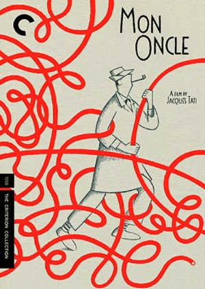